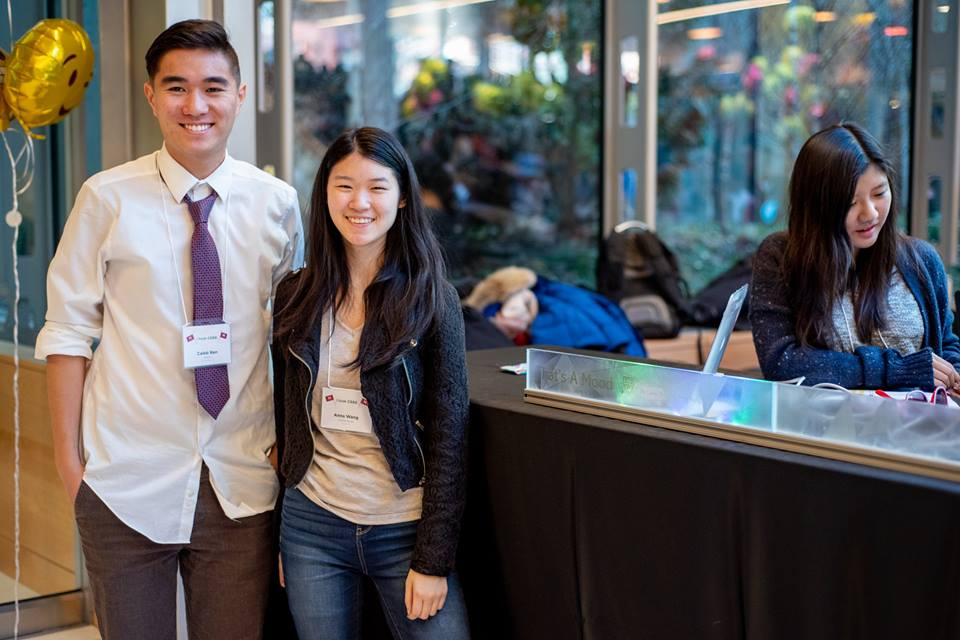
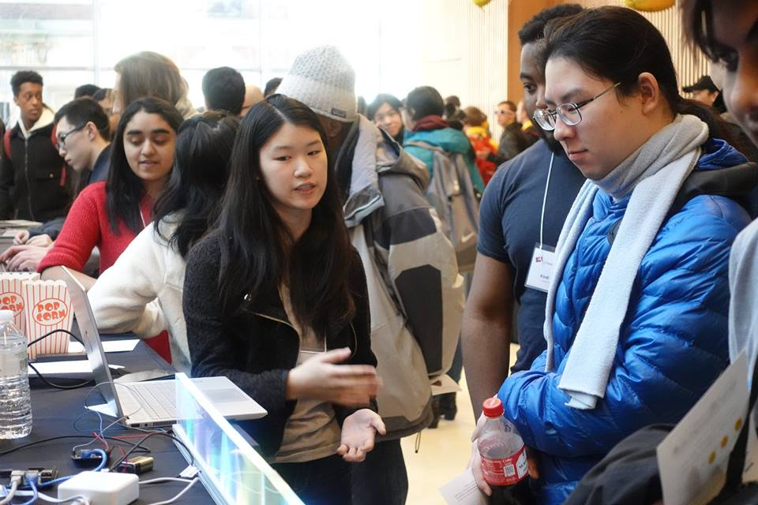
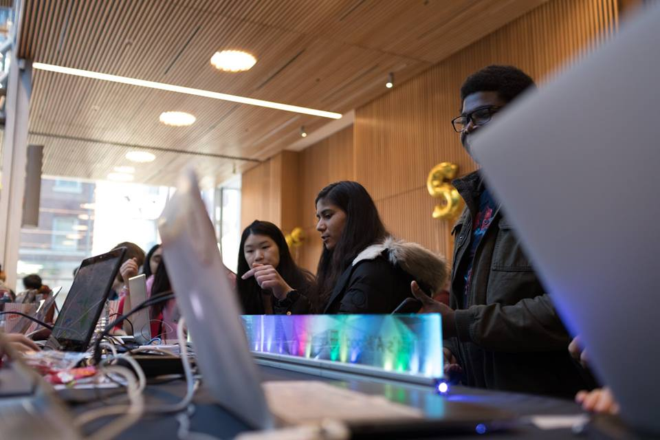
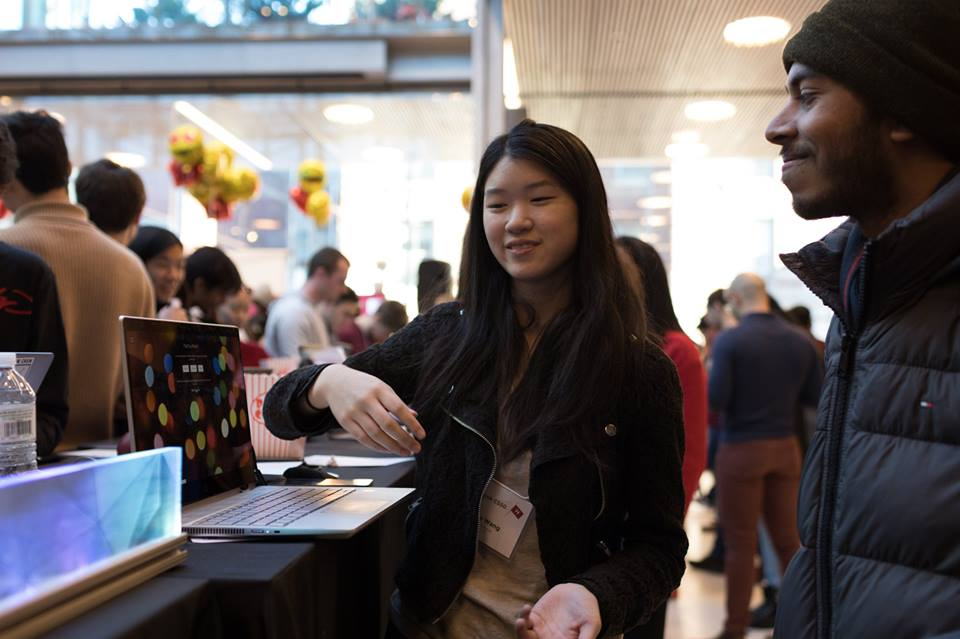

That's A Mood is a project to encourage an open expression of mental health on the Harvard campus. Check out the full github repository here.
You can also read more about this project in this article written by the Harvard School of Engineering and Applied Sciences!
Mental health is a term that addresses our social, emotional, and psychological well-being, and constantly affects how we think, feel, and act. It is an incredibly important aspect of daily life, yet too often mental health problems are ignored or stigmatized in present-day culture.
A poll conducted in 2009 by the American Psychological Association concluded that 75% of adults report moderate to high levels of stress. However, the stigma around mental illnesses is still highly prominent and impedes access to treatment or help around the issue.
By displaying the Harvard community's mental state in an open, yet anonymous environment, we can encourage the normalization of discussion of mental health in our community. That's A Mood encourages a constant dialogue about moods and mental health in a visual, physical environment.
By allowing for a more open display of emotions, we can encourage a more open college campus that doesn't avoid conversations about mental health. Here, we created a hardware display with an Arduino, WS2812 LEDs, and a Raspberry Pi.
When you input your mood on our website in the form of a color, our display anonymously flashes your mood for the world to see, and then the color takes the form of one pixel in the LED strip, flowing down the display along with all past submissions. This process is completely automated and live, and we also gather data on how our environment is doing.
Whether you're feeling elated, worried, or sad, you are not alone. Let's break this stigma and work towards creating better environments of mental health for us all.